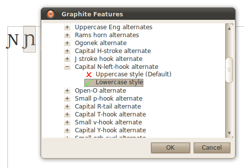
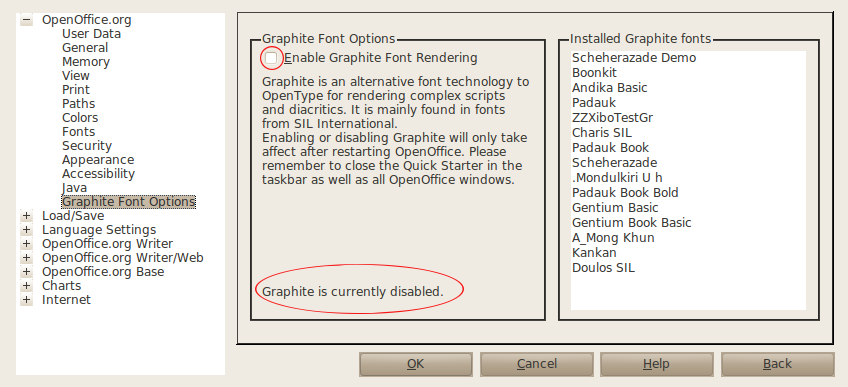

OpenOffice.org supports SIL Graphite Font technology since version 3.2. Graphite Fonts provide smart rendering technology for reordering and shaping of glyphs according to the context. This is needed by many scripts in SE Asia as well as for aesthetic ligatures in European languages. Graphite fonts also support font features, which allow many different glyph variants to be available within the same font to customize a font's appearance according to the user's preference.  This extension provides a dialog to make feature selection easy and also allows Graphite to be disabled for users who don't need Graphite's capabilities and prefer faster performance. The extension is only needed if you are using fonts containing Graphite tables, such as those from SIL.
The Graphite Extension to OpenOffice provides an Option Page which allows Graphite to be enabled and disabled. This actually modifies the SAL_DISABLE_GRAPHITE environment variable which is set in ~/.profile on Linux and HKCU/environment in the Windows registry. The Option Page also lists all the Graphite enabled fonts on your system, so you know which fonts are affected.
A Graphite Features... option is added to the right click context menu, which opens the Graphite Features dialog. This saves you from having to know the individual feature IDs from the font. The Tools/Add-Ons/Graphite Features... menu can also be used.
Please select and download the appropriate .oxt file for your system. The extension can be installed, after downloading, using the Tools/Extension Manager menu in OpenOffice.
Packages for Ubuntu are available by adding the ThanLwinSoft package repository to your apt sources list or by using the Synaptic Package Manager.
deb http://www.thanlwinsoft.org/ubuntu lucid main
You may also want to install the thanlwinsoft-keyring package so that the packages can be verified.
Some users have reported problems with the msvcr90.dll included in the graphiteooo_windows_x86.oxt file. If you get this problem, please try uninstalling the extension, and run the Microsoft Redistributable installer before reinstalling it.
From the menu go to Tools/Options, go to the top "OpenOffice.org" item and "Graphite Font Options" should be the last entry on the left under that. To disable Graphite rendering untick the "Enable Graphite Font Rendering" box. This will take affect after you have restarted OpenOffice. Please make sure that you close all OpenOffice.org windows and the OpenOffice Quick Starter in the taskbar, if it is running, before you restart OpenOffice. After restarting, you can go back to Tools/Options and check the actual status of Graphite rendering at the bottom of that pane in the Graphite Font Options.

After restarting OpenOffice with Graphite disabled, the Graphite Font Options pane should look similar to the screenshot – note the areas highlighted in red.
Please report any bugs or problems you find or post questions to the silgraphite mailing list on Source Forge.
The source code is available from the Graphite OpenOffice.org Extension Mercurial Repository. You will need CMake and the OpenOffice SDK installed to perform the build. See the install.txt file in the source directory for more details.
 This website is licensed under a Creative Commons Attribution-ShareAlike 2.5 License except where another license is explicitly stated.
This website is licensed under a Creative Commons Attribution-ShareAlike 2.5 License except where another license is explicitly stated.
For more information သံလွင်